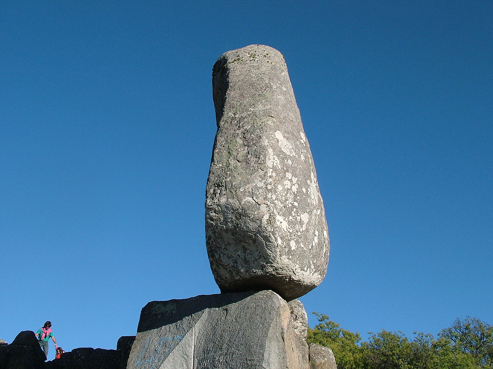
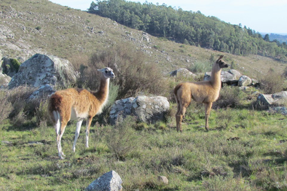
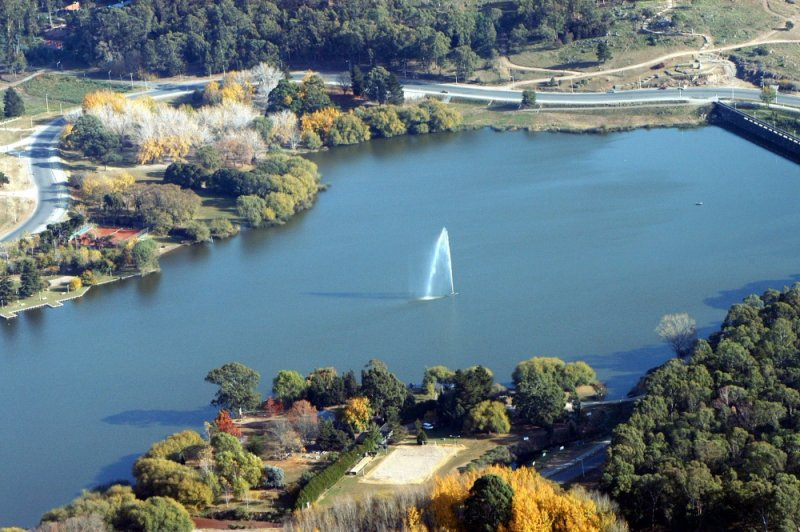
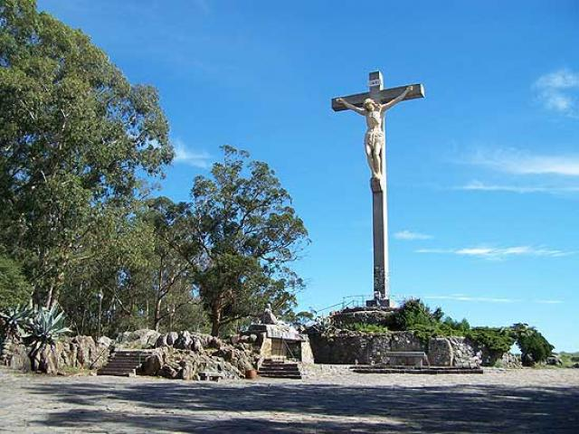

El Cerro El Centinela es un complejo ubicado a 5 kilómetros del centro de Tandil, donde se puede disfrutar de actividades recreativas y gastronomí¬a regional. El mayor atractivo del sitio es la piedra El centinela, monumento granítico de raro aspecto en posición vertical con una altura de casi 7 metros apoyado sobre una base extraordinariamente pequeña para su volumen. Su peso es de 72 toneladas aproximadamente. Desde el año 2000 se puede disfrutar de las aerosillas, circuito que habilita el traslado a otro cerro para contemplar una vista panorámica del lugar o efectuar un recorrido entre cavas de canteras y pinares. Además, el predio invita a realizar cabalgatas guiadas, juegos de aventura, paintball, rappel, tirolesa y caminatas nocturnas. La gastronomía está caracterizada por una cocina regional con predominancia de carnes ovinas, bovinas, caprinas y porcinas grilladas, junto a cazuelas y pasteles cocidos en horno de leña.
Es una estación biológica que resguarda la flora y fauna autóctona. Tiene una extensión de 150 hectáreas de flora y fauna natural. Comprende especies arbóreas exóticas, antiguas canteras, cavas y construcciones de piedra, senderos, casas y pircas pertenecientes a los antiguos picapedreros. Animales de múltiples especies circulan libremente por el terreno, protegidos por cercos. Es posible encontrar llamas, guanacos, pumas y zorros, y otras especies exóticas como jabalíes, ciervos, ciervos axis y liebres europeas. El trekking se ha transformado en una interesante opción para los amantes de la naturaleza. La altura máxima del terreno está dada en el Cerro Venado de 389 metros sobre el nivel del mar.
El Lago del Fuerte es un espejo artificial de agua, creado a partir de una represa construida en el año 1962 para evitar los aluviones de agua a la ciudad, y hoy es el paseo turístico obligado de la ciudad. En el recorrido se pueden realizar múltiples actividades, y visitar diferentes atracciones. En el lago se puede pescar, hacer canotaje, windsurf y otros deportes acuáticos, y en la senda aeróbica que lo rodea se suele caminar y correr, dado que cuenta con estaciones para elongar y hacer diferentes rutinas físicas. Además, en el recorrido del paseo está el "Balneario del Sol", complejo de piletas con capacidad para 7.000 personas, juegos infantiles, confitería, parrillas, y un parador gastronómico. Se encuentra también el Mercado Artesanal de Tandil, donde se pueden adquirir los trabajos de artesanos de la ciudad, y para los más chicos, el Parque Soñado de los Niños, que brinda todas las posibilidades de juegos en aparatos especialmente instalados. El Paseo Mapuche, ubicado sobre el arroyo del Polideportivo Municipal, comprende una construcción de madera que cuenta con un portal en el acceso principal y un recorrido que termina en una glorieta que vincula, a través de un puente, el otro borde del arroyo. Se instaló también una leyenda explicativa sobre la llegada de los Mapuches a Tandil, con un croquis de referencia. Finalmente, se puede visitar el Monumento de Don Quijote y Sancho Panza, inaugurado el 6 de abril de 2008 por iniciativa de la colectividad española residente en nuestra ciudad. El Quijote tiene una altura de 4,6 metros, mientras que Sancho Panza mide 3,5 metros de alto. Cada uno pesa alrededor de una tonelada y ambas esculturas fueron realizadas en hierro por artistas locales.
El Monte Calvario es uno de los lugares más característicos de Tandil. Posee una imponente escultura de Cristo en la Cruz de 22 metros de alto, visible desde varios puntos de la ciudad, y una escalinata de ingreso de 195 peldaños. Fue inaugurado el 10 de enero de 1943, con 14 grupos escultóricos que ilustran las estaciones del Vía Crucis en uno de los sectores del cerro. En su recorrido se puede visitar la primera Capilla Sudamericana dedicada a Santa Gemma y una réplica de La Virgen de Lourdes. Semana Santa es el momento de máxima afluencia de peregrinos y turistas a este lugar. Se estima que durante los cuatro días de la celebración congrega a unas 50.000 personas.
